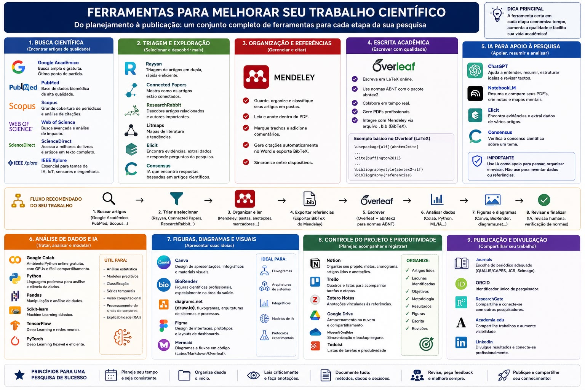
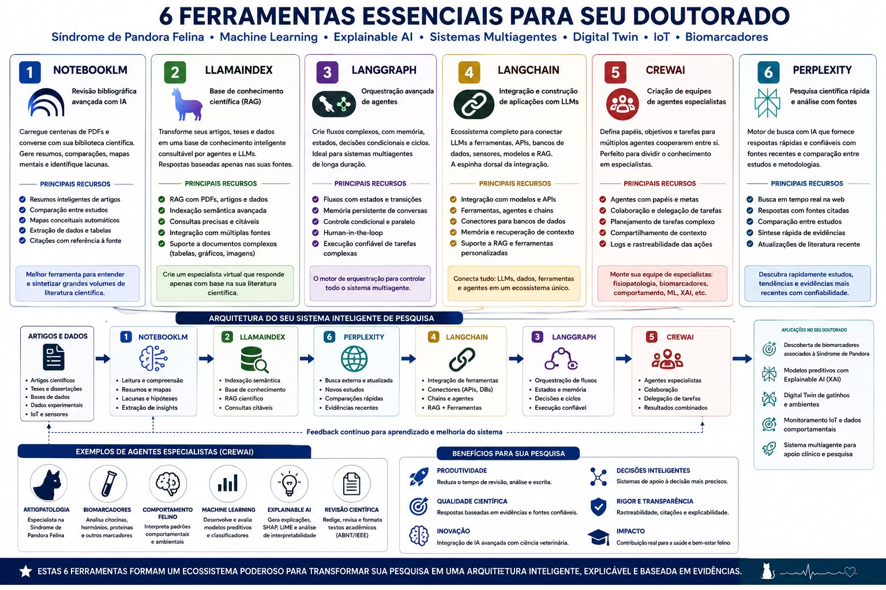
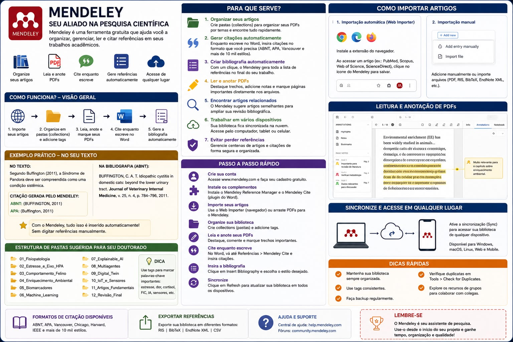

Síndrome de Pandora em Felinos
Referencial teórico, acompanhamento da escrita e projeto IoT: da doença urinária localizada (FLUTD/FIC) à síndrome multissistêmica, com monitoramento contínuo por sensores e IA.
Agrupamento por núcleos proposto, não declarado pelos autores.
Espinha Dorsal do Referencial Teórico
O encadeamento conceitual sustentado pelo acervo (proposto na varredura, não declarado por autor único):
Hipótese Central de Lacuna
Ainda não contrariada no acervo: Não existe na literatura atual nenhum trabalho que aplique sensores ou modelos de IA ao monitoramento contínuo de gatos especificamente acometidos por Síndrome de Pandora.
Essa lacuna científica posiciona a tese como trabalho de vanguarda interdisciplinar entre a Medicina Veterinária e a Ciência da Computação.
Sistema & API de Diagnóstico
O projeto prático de apoio ao diagnóstico (API multiagente) é mantido em repositório dedicado fora do cofre de notas:
Garante separação entre o referencial bibliográfico da tese e o código-fonte computacional.
Adicionar PDF ao Acervo
O PDF será salvo em PDF/A_classificar. A fonte só aparecerá no Acervo depois que o Guardião validar PDF, código, título e duplicatas.
Semana 1 — O Alicerce Clínico-Fisiológico & Início da Escrita
| Cód. | Artigo & Autores | Status | Tema Principal | DOI Oficial (Web) |
|---|---|---|---|---|
| #51 | From FUS to Pandora syndrome Buffington, Westropp & Chew (2014) |
Fichado | Virada conceitual definitiva da síndrome | 10.1177/1098612X14530212 ↗ |
| #53 | Sickness behaviors in response to unusual external events Stella, Lord & Buffington (2011) |
Fichado | Comportamentos de mal-estar sob estresse externo | 10.2460/javma.238.1.67 ↗ |
| S2 | Clinical evaluation of multimodal environmental modification (MEMO) Buffington et al. (2006) |
Ler agora | Avaliação clínica do manejo MEMO em domicílio | 10.2460/javma.228.5.722 ↗ |
| #50 | Small adrenal glands in cats with feline interstitial cystitis Westropp, Welk & Buffington (2003) |
Ler a seguir | Tamanho adrenal e eixo neuroendócrino HHA | 10.1097/01.ju... ↗ |
Semana 2 — O Estado da Arte Clínico & Fatores Socioambientais
| Cód. | Artigo & Autores | Tipo / Enfoque | Tema Principal | DOI Oficial (Web) |
|---|---|---|---|---|
| #16 | Understanding the current evidence base for management of recurrent FIC MacLeod et al. (2025) |
Revisão Sistemática | Revisão recente de intervenções clínicas | 10.1080/00480169... ↗ |
| #17 | Prevalence, Risk Factors, Pathophysiology, Potential Biomarkers and Management Naarden & Corbee (2022) |
Revisão Ampla | Atualização geral de fisiopatologia e biomarcadores | 10.3390/ani12243453 ↗ |
| S1 | Social and environmental factors and indoor cat welfare Foreman-Worsky et al. (2019) |
Revisão Sistemática | Confinamento em ambientes internos e bem-estar | 10.1016/j.applanim... ↗ |
| S4 | Stress in owned cats: behavioural changes and welfare implications Amat et al. (2016) |
Estudo Comportamental | Respostas comportamentais ao estresse doméstico | 10.1016/j.jveb... ↗ |
Semana 3 — O Salto Tecnológico (Sensores, Visão Computacional e IA)
| Cód. | Artigo & Autores | Inovação Tecnológica | Tema Principal | DOI Oficial (Web) |
|---|---|---|---|---|
| #5 | Remote Vital Sensing in Clinical Veterinary Medicine Review (2025) |
Sensores Remotos & IoT | Monitoramento de sinais vitais contínuos sem estresse | 10.3390/vetsci12020161 ↗ |
| #6 | Review of applications of deep learning in veterinary diagnostics Review (2025) |
Redes Neurais Profundas | Aplicações de deep learning no diagnóstico veterinário | 10.1016/j.compag... ↗ |
| #14 | Meow-Omni 1: A Multimodal Large Language Model for Feline Ethology (2026) |
Multimodal LLM | Interpretação multimodal de comportamento e postura felina | 10.48550/arXiv... ↗ |
Base Histórica, Clínica e Fisiológica
Compreende a transição da afecção pontual urológica para o modelo sistêmico neuroendócrino. Mapeia as respostas fisiológicas ao estresse, a hiporreatividade adrenal do eixo HHA e o excesso de tônus simpático.
- ▸ Doenças do trato urinário inferior felino (FLUTD e FUS histórico)
- ▸ Cistite idiopática (FIC) e intersticial
- ▸ Proposta formal da Síndrome de Pandora como doença sistêmica
- ▸ Eixo hipotálamo-hipófise-adrenal (HHA) e glândulas adrenais
- ▸ Hiperatividade do sistema nervoso simpático e mediadores de dor
- ▸ Diagnóstico diferencial de infecção bacteriana (Diretriz ISCAID)
Ambiente, Comportamento e Tecnologia
Foca no impacto do ambiente confinado na etologia felina, nas respostas comportamentais a eventos externos, no enriquecimento ambiental e nas fronteiras computacionais com sensores e Inteligência Artificial.
- ▸ Comportamento e respostas ao estresse doméstico ("sickness behaviors")
- ▸ Confinamento em ambientes internos e relação tutor–gato
- ▸ Manejo Ambiental Multimodal (MEMO) e recursos essenciais
- ▸ Sensores biométricos remotos e monitoramento fisiológico contínuo
- ▸ Visão computacional e redes neurais profundas para detecção de postura
- ▸ Modelos de Linguagem Multimodais aplicados à etologia felina
Evolução semanal
Probabilidade de cumprir o prazo
Estatística do acervo
Uso e constância
Registrar uma semana
Se a semana já existir, ela é substituída. Os dados ficam salvos neste navegador; use Exportar para guardar uma cópia no cofre (OneDrive).
Dados
Sugestão: salve o arquivo exportado como Excel/acompanhamento_semanal.json.
Histórico
Cronograma do Doutorado & Artigo
Marque as etapas concluídas para acompanhar o avanço prático do doutorado. Os dados ficam salvos automaticamente no seu navegador.
Adicionar Etapa ao Cronograma
Cronograma Visual — Linha do Tempo
Arraste uma barra para mover a etapa · Clique para editar · × para excluir · Linha verde = hoje
Calendário científico — 01/06/2026 a 31/05/2027

Configurar metas
Ferramentas de apoio à pesquisa




Clique na aba para conectar ao painel local. Se aparecer esta mensagem, inicie o painel: execute Iniciar painel.bat em C:\Users\rcmin\Projetos\S-ndrome-Pandora\.
Como estudar melhor
Prática de recuperação
Depois de ler um artigo, feche o PDF e escreva de memória: problema, método, resultado principal e limitação. Só então confira. Recuperar a informação fixa mais do que reler.
Revisão espaçada
Revise o fichamento no dia seguinte, depois de uma semana e depois de um mês. Use a data do fichamento no Obsidian para programar as revisões.
Intercalação
Alterne blocos do Núcleo 1 (fisiologia) e do Núcleo 2 (ambiente e tecnologia) na mesma semana. Comparar temas ajuda a enxergar as conexões que a tese precisa fazer.
Elaboração: pergunte "por quê?"
Para cada achado, escreva uma frase ligando-o à pergunta da tese. Se não conseguir, o achado talvez não entre no referencial.
Notas atômicas no cofre
Uma ideia por nota, com link para a fonte. Notas pequenas e ligadas entre si viram parágrafos com muito menos esforço na hora de escrever.
Evitar a procrastinação
Meta mínima diária
Defina um mínimo que você cumpre até num dia ruim: 1 página lida com anotação ou 150 palavras escritas. O mínimo mantém a constância; o resto é bônus.
Blocos de foco (Pomodoro)
25 minutos de trabalho em uma única tarefa, 5 de pausa; a cada 4 blocos, pausa longa. Use o cronômetro abaixo.
Tarefa do tamanho certo
"Escrever o capítulo 2" paralisa. "Escrever o parágrafo sobre o eixo HHA com #50" começa. Quebre até a próxima ação caber em um bloco.
Plano "se… então…"
Ex.: "Se for 8h, então abro o fichamento do dia antes do e-mail." Decidir antes o quando e o onde reduz a negociação consigo mesmo.
Escreva feio primeiro
Rascunho e revisão são etapas separadas. Primeiro o texto existe, depois fica bom.
Ambiente e prestação de contas
Celular fora do alcance, abas fechadas, um único documento aberto. Registre a semana no painel e compartilhe o avanço com o orientador em intervalos fixos.
Cronômetro de foco
0 blocos concluídos hojeNormas ABNT para a tese
| Norma | Trata de |
|---|---|
| NBR 14724:2024 | Trabalhos acadêmicos: estrutura (pré-textuais, textuais, pós-textuais) e apresentação |
| NBR 6023:2018 | Referências |
| NBR 10520:2023 | Citações em documentos |
| NBR 6024:2012 | Numeração progressiva das seções |
| NBR 6027:2012 | Sumário |
| NBR 6028:2021 | Resumo, resenha e recensão |
| NBR 6034:2004 | Índice |
| NBR 12225 | Lombada |
Apresentação usual (confira no guia da UFC)
- Papel A4; margens de 3 cm (superior e esquerda) e 2 cm (inferior e direita) no anverso.
- Fonte tamanho 12 no texto; menor (ex.: 10) em citações longas, notas, legendas e fontes de ilustrações.
- Espaçamento 1,5 no texto; simples em citações longas, notas, referências, legendas e natureza do trabalho.
- Citação direta com mais de três linhas: recuo de 4 cm da margem esquerda, sem aspas.
- Ilustrações e tabelas com título em cima e fonte embaixo.
Citações (NBR 10520:2023) — lembretes
- Sistema autor-data: (BUFFINGTON; WESTROPP; CHEW, 2014, p. 390). Na versão de 2023 o sobrenome pode vir em caixa alta e baixa; siga o padrão definido pela UFC e seja consistente.
- Citação direta exige página; na indireta a página é opcional.
- Citação de citação: "apud" — e a obra original precisa ser buscada sempre que possível (regra do cofre).
No cofre, a skill de revisão ABNT e o export_limpo.bib ajudam a manter as referências no padrão.
Regras para produzir a tese na UFC
- Guia de normalização da Biblioteca Universitária (BU/UFC): é a referência para a formatação de teses e dissertações na UFC; tem modelos e exemplos baseados na ABNT.
- Ficha catalográfica: gerada pelo sistema da BU/UFC a partir dos dados do trabalho; vai no verso da folha de rosto.
- Regimento do Programa de Pós-Graduação: define prazos, qualificação, composição da banca, créditos e exigência de artigo publicado ou submetido. Leia o regimento e as resoluções vigentes do seu programa.
- Depósito final: versão corrigida após a defesa, termo de autorização e envio ao Repositório Institucional da UFC, conforme orientação da secretaria do programa.
- Pesquisa com animais: projetos com uso de animais precisam de aprovação da CEUA antes da coleta; o número do protocolo entra na metodologia.
- Pesquisa com tutores (questionários): envolve seres humanos; verifique a necessidade de submissão ao CEP (Plataforma Brasil) e o TCLE.
Revistas-alvo e diretrizes de relato
Cada revista tem "Instructions for authors" próprias (limite de palavras, estilo de referência, figuras). As diretrizes de relato abaixo são aceitas pela maioria das revistas da área e devem ser seguidas desde o planejamento.
| Área | Revistas do calendário | Estilo de referência mais comum |
|---|---|---|
| Medicina felina e veterinária | Journal of Feline Medicine and Surgery · Frontiers in Veterinary Science · Animals (MDPI) · Veterinary Sciences | Numérico (Vancouver ou variante da editora) |
| Biomedicina e dados | PLOS ONE · Computers in Biology and Medicine | Numérico (Vancouver / estilo Elsevier) |
| IA e sistemas | Artificial Intelligence in Medicine · Expert Systems with Applications · Knowledge-Based Systems · IEEE JBHI | Numérico (Elsevier / IEEE) |
Diretrizes completas e listas de verificação: EQUATOR Network ↗
Uso de IA na pesquisa: regras de integridade
- IA não é autora. Diretrizes do ICMJE e do COPE: ferramentas de IA não cumprem os critérios de autoria.
- Declare o uso. A maioria das editoras pede declaração de qual ferramenta foi usada, para quê e em que seção (métodos ou agradecimentos). Confira a política de cada revista.
- Nunca use IA como fonte. Toda referência, número e página deve ser conferido no documento original — é a regra principal deste cofre.
- Dados sensíveis: não envie dados identificáveis de tutores para serviços externos sem previsão no protocolo aprovado.
- Modelos da tese (Artigo 3): descreva dados, divisão treino/teste, métricas e explicabilidade (SHAP, LIME) seguindo o TRIPOD+AI; disponibilize o código quando possível.